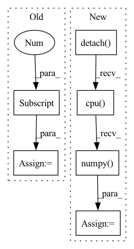

Pattern ID :4434
Before Change
input_image = np.asarray(input_image, np.uint8)
image_slice = input_image[10]
fastmarch_output_slice = fastmarch_output[10]
geodistkraster_output_slice = geodistkraster_output[10]
fastraster_output_cpu_slice = fastraster_output_cpu[10]
if device:
fastraster_output_gpu_slice = fastraster_output_gpu[10]After Change
seed_image_pt = seed_image_pt.to(device)
tic = time.time()
toivanenraster_output = np.squeeze(
FastGeodis.generalised_geodesic3d_toivanen(
input_image_pt, seed_image_pt, spacing, 1e10, 1.0, 4
)
.detach()
.cpu()
.numpy()
)
toivanenraster_time = time.time() - tic
tic = time.time()In pattern: SUPERPATTERN
Frequency: 4
Non-data size: 6
Instances Fragment ID: 16252455
Project Name: masadcv/fastgeodis
Commit Name: a1906e989649c1f0b8fdbed147c1d576ac5c41f3
Time: 2022-07-22
Author: muhammad.asad@kcl.ac.uk
File Name: samples/demo3d.py
M Class Name: AnonimousClass
N Class Name: AnonimousClass
M Method Name: demo_geodesic_distance3d(2)
N Method Name: demo_geodesic_distance3d(2)
M Parent Class:
N Parent Class:
M File Name: samples/demo3d.py
N File Name: samples/demo3d.py
M Start Line: 33
M End Line: 204
N Start Line: 17
N End Line: 181
Before Change
print("unit_counts:", unit_counts) if debug else None
unit_counts_bow = np.zeros((1, SFS.unit_counts_bow))
for u_c in unit_counts:
unit_type = u_c[0]
unit_count = u_c[1]
assert unit_type >= 0
// the unit_count can not be negetive number
After Change
def calculate_unit_counts_bow_numpy(obs):
ret = calculate_unit_counts_bow(obs)
ret = ret.detach() .cpu().numpy()
return ret
Fragment ID: 16252481
Project Name: liuruoze/mini-alphastar
Commit Name: a115d8c35ded3fa3d608df5576d72a17cf941787
Time: 2021-12-10
Author: liuruoze@163.com
File Name: alphastarmini/lib/utils.py
M Class Name: AnonimousClass
N Class Name: AnonimousClass
M Method Name: calculate_unit_counts_bow_numpy(1)
N Method Name: calculate_unit_counts_bow_numpy(1)
M Parent Class:
N Parent Class:
M File Name: alphastarmini/lib/utils.py
N File Name: alphastarmini/lib/utils.py
M Start Line: 100
M End Line: 119
N Start Line: 98
N End Line: 100
Before Change
else:
// Assume that the person is centerered in the image
height = img_for_crop.shape[0]
width = img_for_crop.shape[1]
center = np.array([width // 2, height // 2])
scale = max(height, width) / 180
After Change
human_ids = torch.logical_and(
predictions["labels"] == 1,
predictions["scores"] == predictions["scores"].max()).nonzero().squeeze(1)
bbox = predictions["boxes"][human_ids, :].flatten().detach() .cpu().numpy()
width = bbox[2] - bbox[0]
height = bbox[3] - bbox[1]
center = np.array([(bbox[0] + bbox[2]) / 2.0, Fragment ID: 16252431
Project Name: yuliangxiu/icon
Commit Name: 2117636e701293c457554812067b272fcf3f8252
Time: 2022-10-10
Author: yuliang.xiu@tuebingen.mpg.de
File Name: lib/pymaf/utils/imutils.py
M Class Name: AnonimousClass
N Class Name: AnonimousClass
M Method Name: process_image(5)
N Method Name: process_image(6)
M Parent Class:
N Parent Class:
M File Name: lib/pymaf/utils/imutils.py
N File Name: lib/pymaf/utils/imutils.py
M Start Line: 91
M End Line: 132
N Start Line: 111
N End Line: 128
Before Change
diff_numpy = diff.numpy()
index_list = np.where(diff_numpy >= 1.0)
print("index_list:", index_list) if debug else None
index = index_list[1][0]
if index not in worker_type_list and index not in supply_type_list:
previous_bo.append(index)
After Change
index = torch.nonzero(diff, as_tuple=True)[-1]
print("index:", index) if debug else None
index = index.detach() .cpu().numpy() .tolist()
previous_bo.extend(index)
return previous_bo
Fragment ID: 16252428
Project Name: liuruoze/mini-alphastar
Commit Name: a115d8c35ded3fa3d608df5576d72a17cf941787
Time: 2021-12-10
Author: liuruoze@163.com
File Name: alphastarmini/lib/utils.py
M Class Name: AnonimousClass
N Class Name: AnonimousClass
M Method Name: calculate_build_order(3)
N Method Name: calculate_build_order(3)
M Parent Class:
N Parent Class:
M File Name: alphastarmini/lib/utils.py
N File Name: alphastarmini/lib/utils.py
M Start Line: 126
M End Line: 145
N Start Line: 111
N End Line: 135